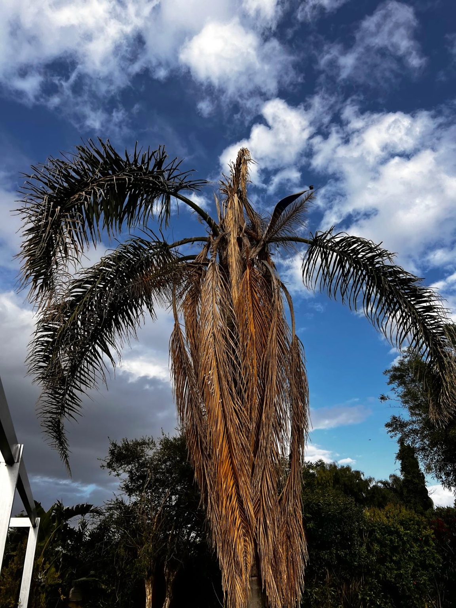
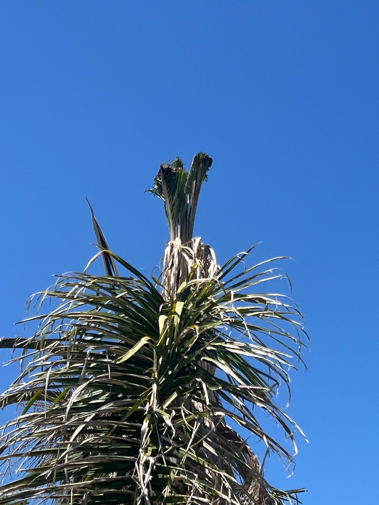
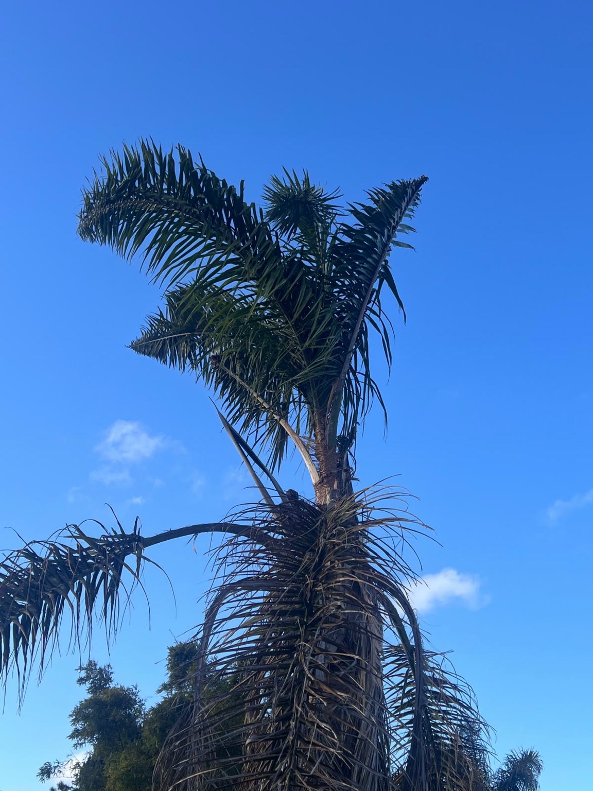
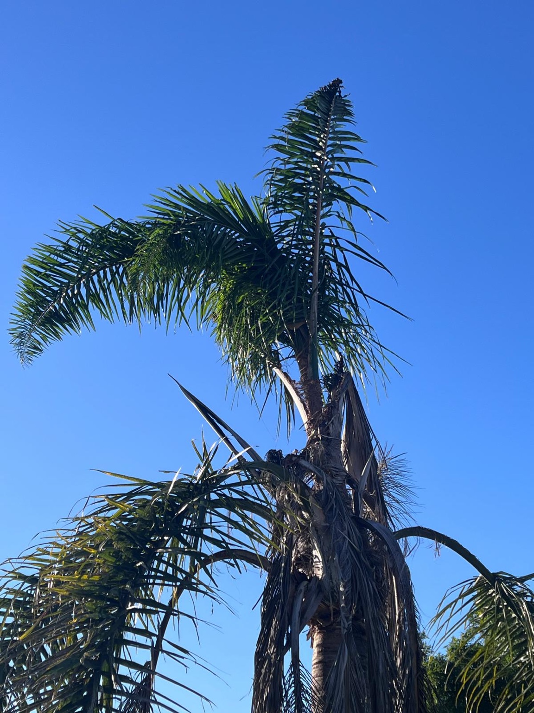
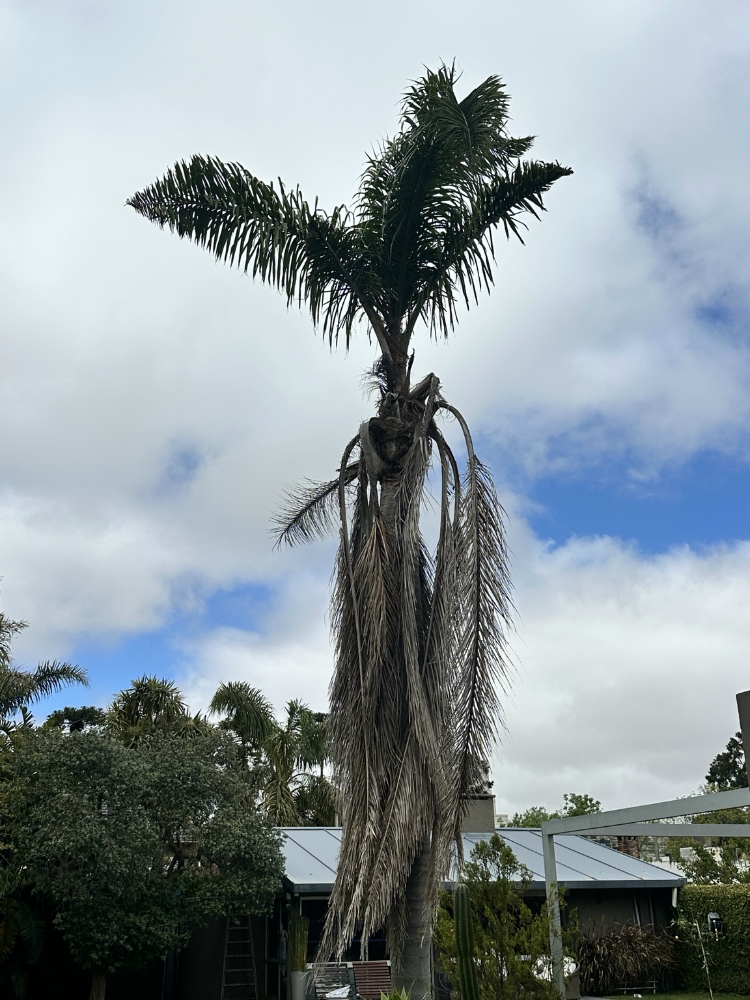

Corona severamente deteriorada, con predominio de hojas secas.
CASO DOCUMENTADO · SYAGRUS ROMANZOFFIANA
Recuperación vegetativa de una palmera pindó
Seguimiento de campo desde el 1 de diciembre de 2025 al 16 de octubre de 2026.
319 días de seguimiento
Un caso con cinco fotografías fechadas que registra el desarrollo progresivo de nuevo follaje después de un deterioro inicial severo.
Evolución fotográfica documentada
01/12/2025
10/02/2026
Presencia de tejido verde y crecimiento incipiente en la región central.
28/04/2026
Desarrollo de hojas verdes y crecimiento central erguido.
02/07/2026
Continuidad de la emisión foliar en la corona superior.
16/10/2026
Corona verde más desarrollada y persistencia de actividad vegetativa.
Intervención
PalmKeeper realizó un programa de manejo fitosanitario con endoterapia y tratamientos foliares complementarios, acompañado de observaciones sucesivas. Las formulaciones, dosis y técnicas específicas son parte de la documentación técnica confidencial de PalmKeeper.
Interpretación técnica
Las imágenes registran recuperación vegetativa y sugieren conservación de actividad en el meristema apical. No demuestran por sí solas erradicación de una plaga ni permiten atribuir el resultado a un producto aislado.
Registro fotográfico
Cinco imágenes originales del seguimiento, ordenadas cronológicamente. Se muestran directamente en la página, sin Google Drive.





Documentación fotográfica de PalmKeeper®. Visualización en línea.